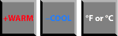

Change the seat temperature display
Personal preference for Fahrenheit or Celsius can be set.
Launch your personal Primary Control dialog.
Select
Seat Configuration
.
Tap
Layout
.
Tap
Temperature
.
Toggle the temperature setting.

Parent topic:
Crew area